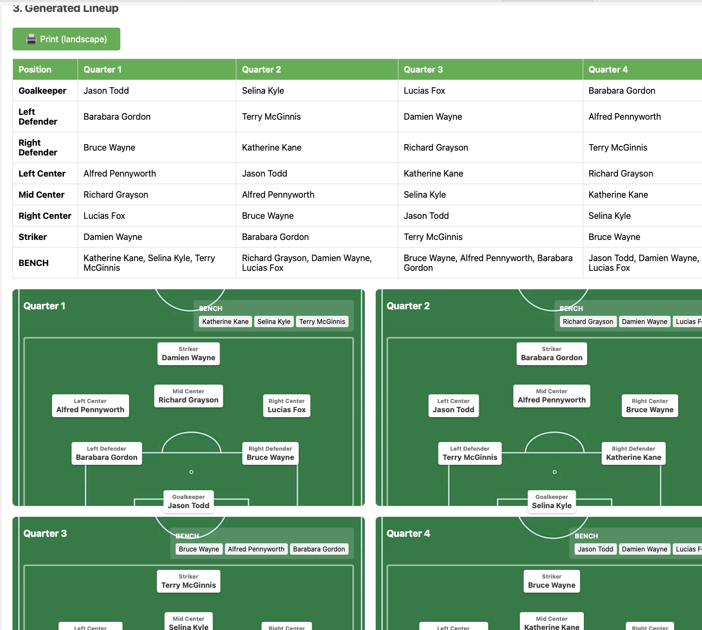

Step 1: Enter Player Data
Enter player data either as a list of names only, or as a csv formatted list of names, Y or N for present this game, and then 0-10 rankings for each position (like this example you can save and edit in Microsoft Excel.)


Enter player data either as a list of names only, or as a csv formatted list of names, Y or N for present this game, and then 0-10 rankings for each position (like this example you can save and edit in Microsoft Excel.)
After clicking generate line up you'll have a table and visual rendering per quarter than you can edit (in table, or by dragging player cards around to switch positions.) 
If you enter something invalid, like a player in two positions on the field or a player subbed out too often and violating everyone plays then the players will be marked red and you can corect in the table.

The Sharable link creates a LONG url you can use too pull up the same lineup and rendering. URL is long because all the player data is contained in it.
This can be used to share with fellow coaches and parents or just to save and get a filled out roster to start editing for the next game.
If sharing in text, probably a good idea to shorten the long URL first.